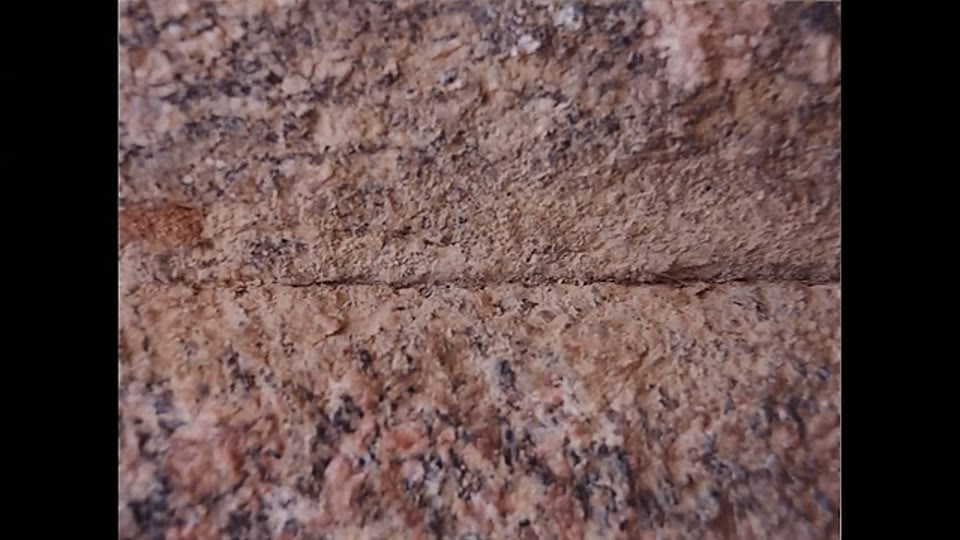
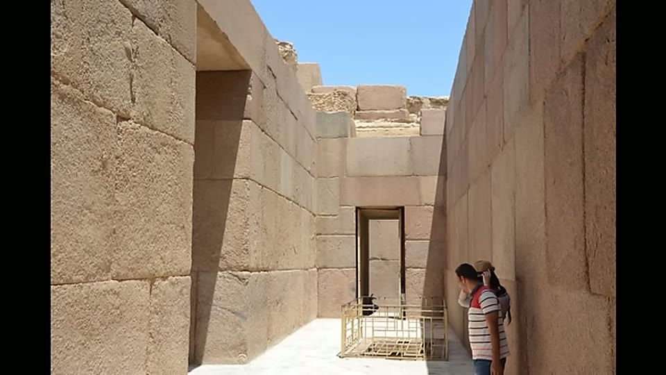
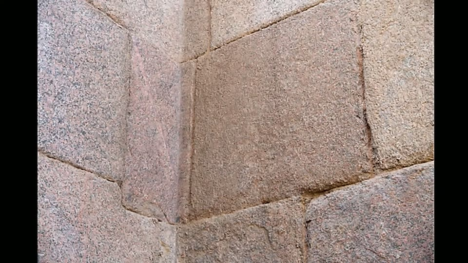
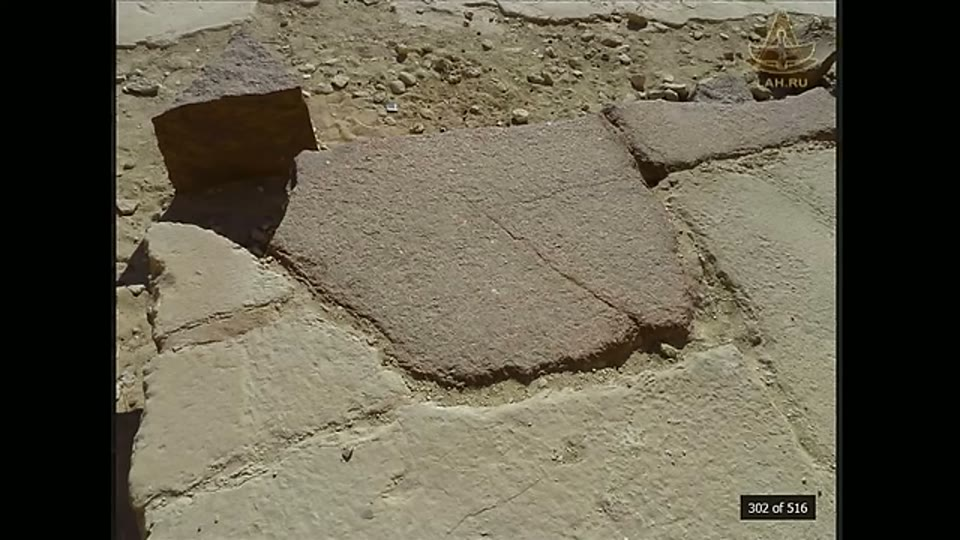
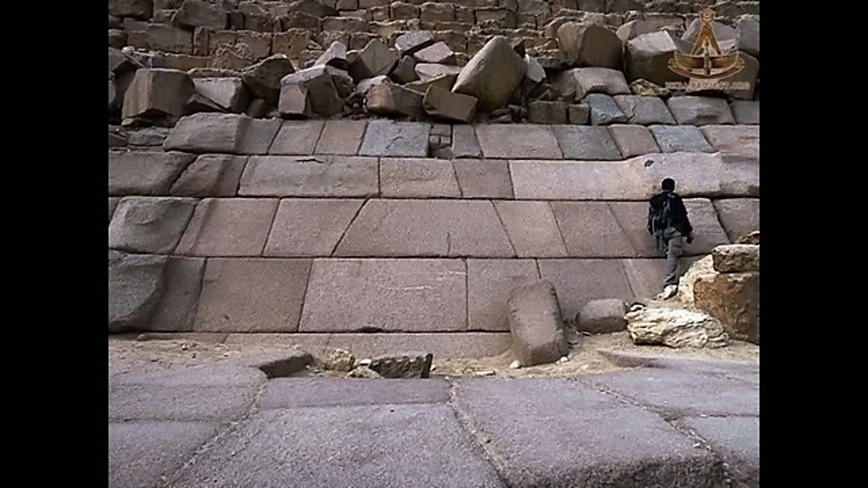
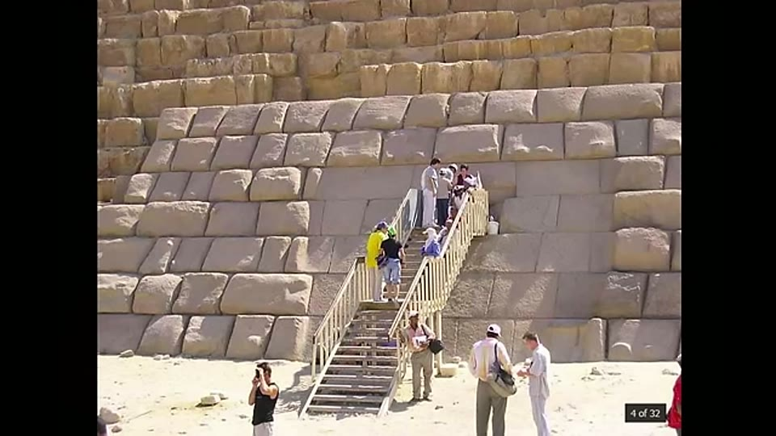
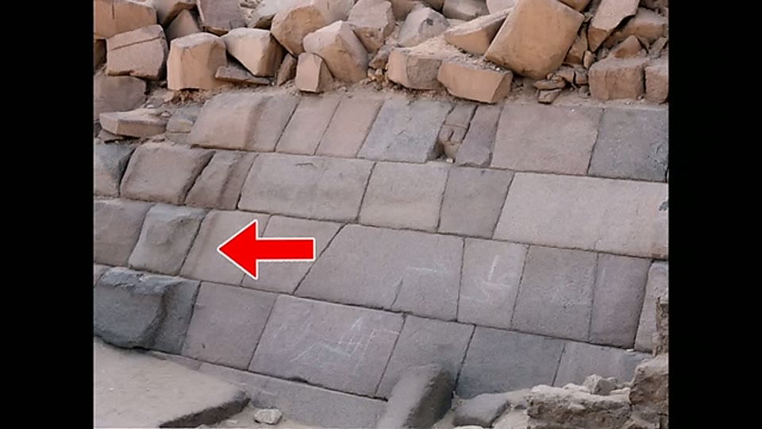
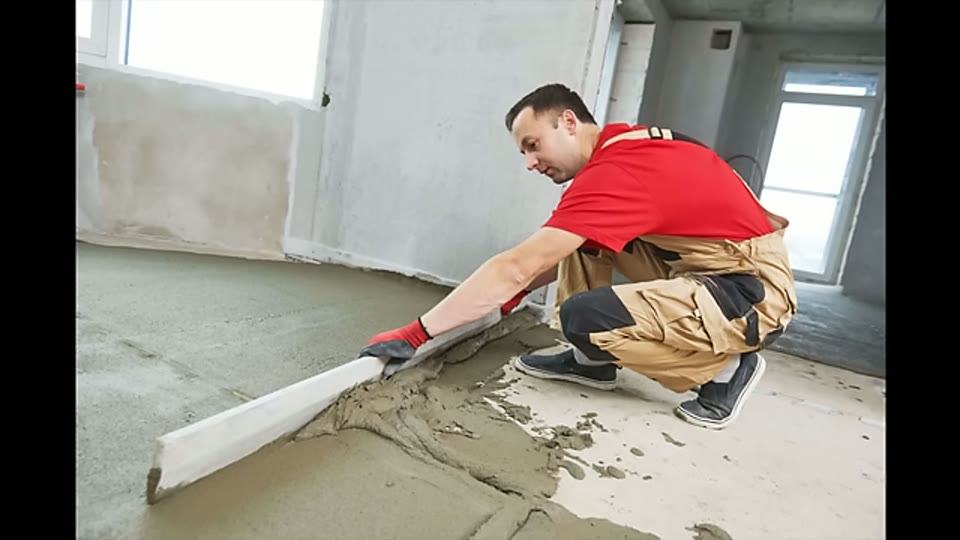
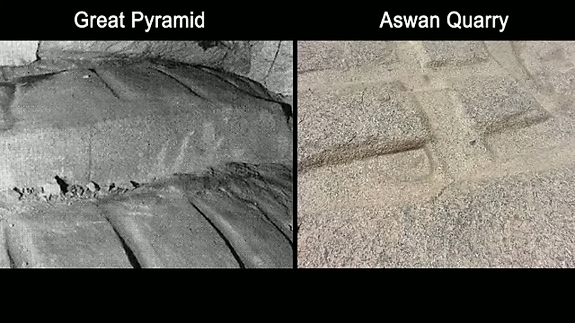
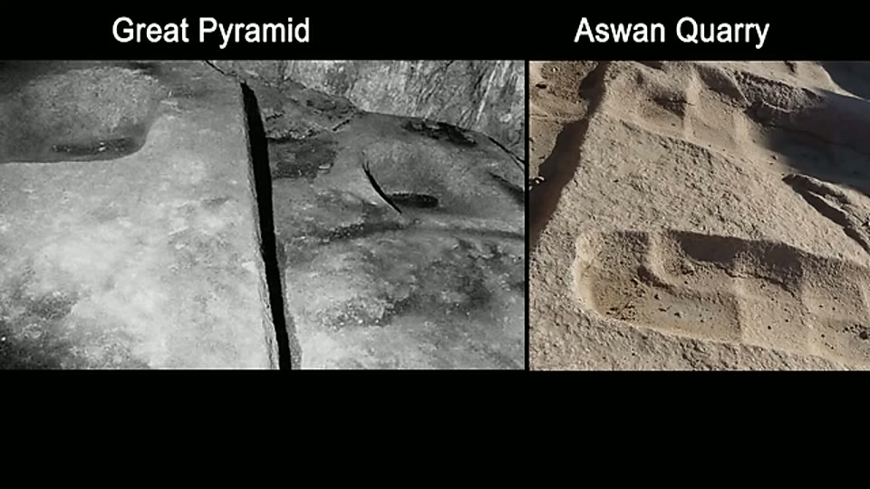

Curious Being
Giza's Precise Granite Blocks: Proof of Ancient High Technology?
Tina · 19 min · watch on YouTube · summarised 2026-08-23
Granite is the hardest common building stone at Giza and the least explicable one. The video gathers four kinds of granite work on the plateau 00:00–01:02: the 70-tonne beams over the King's Chamber, the near-invisible joints in the Valley Temple, the puffy and knobbed casing blocks at Menkaure, and loose blocks carrying evenly curved surfaces. All of it is rose granite said to have been quarried at Aswan, over 900 km upriver, and raised onto a plateau 60 m above the valley floor.
Her stated approach 01:49–02:06 is to weight the judgement of working stonemasons and construction professionals above that of historians and Egyptologists, on the grounds that the question is a practical one about existing physical objects.
The Valley Temple, and the price of a perfect joint
The Valley Temple of Khafre is limestone sheathed in pink granite, the granite cut to fit and cover eroded limestone behind it 02:48–03:06. Its joints are fine enough that a hair will not enter, and the seams are difficult to see at all.


Joints fine enough that a hair will not enter them, against a tested bronze-saw rate of 4 mm an hour.
Against this she sets the accepted method, tested 03:24–03:58: archaeologists sawing granite with a large bronze saw, two people working it while others fed sand and water as abrasive, achieved 4 mm an hour, and a few inches over several days. She notes the resulting surface does not approach the temple's accuracy.
Then the feature she finds harder to explain than the flatness — the shapes 04:05–04:53. The temple is full of interlocking polygonal blocks and L-shaped corner stones that turn a corner in a single piece, as though bent rather than cut, and one monolith with sixteen sides. Her question is why anyone would choose this. One perfectly fitted face between two blocks is already difficult; producing dozens of irregular blocks that each fit several neighbours multiplies the difficulty for no structural gain — unless the method made shape cheap.

Corner stones that turn the corner in one piece rather than being butted, which multiplies the fitting difficulty for no structural gain.
A related argument runs on brittleness 05:13–06:28. Granite's tensile strength can be as low as 4% of its compressive strength, which makes sharp square corners its most fragile feature — modern granite slabs are usually bevelled or eased for exactly this reason. Placing large blocks with intact square corners and hairline joints, repeatedly, is difficult with modern equipment.
Blocks made to fit what was already there
At the Khafre and Menkaure pyramids the granite casing survives at the base, and the line where it meets the limestone core behind it is not straight but ragged and zigzag 07:30–08:36. The casing was therefore shaped to the irregular core stones rather than the core being trimmed to accept regular casing — meaning each casing block was custom-made to its own backing. The same applies to the granite sheathing at the Valley and Sphinx temples, cut to fill eroded limestone.

The line between granite casing and limestone core is ragged, not straight - so each casing block was cut to fit the irregular stone already behind it.
At the Sphinx Temple, where the sheathing was robbed away, loose granite blocks with curved profiles remain; she reports that Christopher Dunn examined one and found the radius consistent along its length 06:45–07:25.
Menkaure: the observation the video is built on
The granite casing at Menkaure carries no chisel marks, comes in different sizes, and has a clay-like bulging look, with scraped faces and knobs of various shapes 08:49–09:22. Rows of flat, finished blocks with tight seams sit next to untouched pillowy ones.


Casing blocks with a clay-like bulging surface, in courses beside blocks that have been dressed flat.
The detail she treats as decisive is that some bulging blocks are partially flattened — flat on one face and still bulging on the other, as if the work stopped mid-block 09:40–10:00.

Work stopped part-way: flat faces beside bulging ones in the same course, which she reads as screeding interrupted rather than carving abandoned.
Her reading is that the material was soft and workable when it was placed, and that the flat faces were produced by smoothing it, not by carving it. She names the modern equivalent: screeding, the concrete operation of dragging a straight edge across fresh material to level it. On this account Menkaure's casing is frozen part-way through that process.

The modern operation she names the comparison for: dragging a straight edge across material that is still soft.
The obvious objection — that granite is igneous and cannot be cast — she answers with the existence of the cast stone industry 10:59–12:33: reconstituted stone that looks and performs like granite is manufactured commercially, has technical standards from the UKCSA and ASTM, and has precedent in Roman pozzolanic cement. Cast stone is also free of the natural stratification and defects of quarried stone, can be made in any shape, and can be produced in place.
She is explicit that no material study of Giza granite exists 12:40–12:47, and rests the case on what casting would explain: the screeding and scraping marks, the indents, the bulging demoulded look, the fit to eroded cores, the consistent curves, and joints that would be easier to achieve by casting in situ — where nothing heavy needs manoeuvring and a chipped corner can be repaired on the spot.
Two further points are offered. Prior studies, she says, found the core stones and casings of several pyramids to be artificial reconstituted limestone. And Giza's granite appears to her to have no veins at all, where natural granite has its own colour, texture and veining 17:21–17:40.
The relieving chambers
Above the King's Chamber are five chambers containing 43 granite beams of 50 to 80 tonnes each — each beam the weight of one to two fully loaded articulated lorries 14:54–15:33. She notes the cracks between blocks are probably the work of the earthquakes of 908 and 1301 AD, and that the beams were likely originally as tightly fitted as the Valley Temple stones.
In Lady Arbuthnot's and Campbell's chambers there are linear grooves, crossing grooves and bowl-shaped indents in the granite 16:06–16:55. From the photographs she could find, the grooves carry no chisel marks and look smooth, like parallel imprints scraped into malleable material, and the bowl-shaped hollows look scooped out. She compares them to the scoop marks at Aswan.


Grooves and bowl-shaped hollows in the relieving chamber beams, which she compares with the scoop marks at Aswan.
She raises an objection to her own case here and leaves it open 16:55–17:10: if the beams were cast, why are they different sizes rather than made in a single reusable mould?
What you can check yourself
- The half-flattened Menkaure blocks — flat on one face, bulging on the other — are the strongest checkable claim in the video. They either exist on that casing or they do not, and one photograph settles it.
- The zigzag line between granite casing and limestone core at Khafre and Menkaure is visible wherever the casing has been stripped.
- The L-shaped and polygonal blocks in the Valley Temple can be counted and photographed.
- Whether Giza granite shows veining is a photographic question, and the easiest of all these to answer.
- The bronze saw rate of 4 mm an hour comes from a published experiment and can be looked up and repeated.
- Granite's tensile strength at a small fraction of its compressive strength is a standard material property.
- Cast stone standards from the UKCSA and ASTM are public documents.
- The relieving chamber grooves and indents are on accessible surfaces, and better photography would settle whether they carry chisel marks — she is working from limited images and says so.
- The decisive test is a material one. Thin section or X-ray diffraction on a granite sample would distinguish an igneous rock from a cementitious aggregate outright. That test has not been done.
What the video does not settle
- No analysis of the material is offered, and the video says so. The hypothesis is falsifiable and cheap to falsify, which makes its absence the central gap rather than a caveat.
- The cast-stone precedents postdate the structures. Roman pozzolanic cement is roughly two and a half thousand years later than the date given for Giza, and modern cast granite uses Portland cement or polymer resins. That cast stone is possible now does not establish a material, a binder or a source available then, and none is proposed.
- Nothing addresses the industry casting would require — binder production at scale, aggregate preparation, formwork, curing. No such installation has been identified at Giza, and the question is not raised.
- "No veins" is asserted without a criterion. Granite's characteristic appearance is an interlocking crystal texture rather than the veining of marble, so what would count as a counter-example is not stated, and no source is given for the observation.
- The differing beam sizes are raised and not answered. She acknowledges the difficulty and replies only that casting in place would still be easier than cutting and lifting, which does not address the point.
- The Dunn measurement is cited without figures or method — no radius, no tolerance, no description of how it was taken.
- The relieving chamber grooves are read from limited online photographs, which she states plainly, and the resemblance to Aswan's scoop marks is a resemblance rather than a measurement.
- The earlier limestone studies are referred to but not named, so the strongest supporting evidence for the casting hypothesis is not identifiable from this video.
- The appeal to stonemasons over Egyptologists is stated as a principle, not argued. Experience of cutting stone with modern tools is a different competence from knowledge of ancient technique, and the video does not say why one should outrank the other on a historical question.
- The eroded limestone behind the granite is not followed up. Sheathing cut to fit already eroded core stone implies the core weathered before the granite was applied; the video treats this only as evidence of custom fitting and does not draw the chronological consequence.
See also
How Were Sacsayhuamán Polygonal Walls Built? — the same casting hypothesis argued on the other side of the world, and in more detail.
Megalithic Knobs: What Are They? — the Menkaure knobs referred to here.
Scoop Marks in Egypt: A Groundbreaking New Hypothesis — the Aswan marks the relieving chamber grooves are compared to.
What we have not checked
- The 900 km distance from Aswan, the 60 m plateau height, the 4 mm-per-hour saw rate, the 4% tensile figure, the 43 beams at 50–80 tonnes and the 908 and 1301 AD earthquake dates are as she gives them and have not been traced.
- Christopher Dunn is named clearly, but the examination of the curved block is described without a citation.
- The "multiple scientific studies" finding pyramid stone to be reconstituted limestone are not named. This is almost certainly the Davidovits geopolymer work, but the attribution is inferred, not heard, and needs checking before it is repeated anywhere.
- Whether the bronze saw experiment is Denys Stocks' is likewise not stated in the video.
- The sixteen-sided monolith is never photographed in the video — the only depiction of it is the presenter's line drawing, which shows a stepped block without dimensions or scale. The count of sixteen sides cannot be checked against anything on screen.
- The names of the relieving chambers — Lady Arbuthnot's and Campbell's — come through the captions correctly and match the standard names.